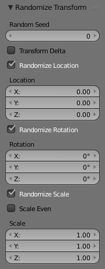

Transform Tools¶
Ngẫu Nhiên Hóa sự Biến Hóa -- Randomize Transform¶
Tham Chiếu -- Reference
| Chế Độ -- Mode: | Chế Độ Vật Thể và Chế Độ Biên Soạn -- Object Mode and Edit Mode |
|---|---|
| Bảng -- Panel: | |
| Trình Đơn -- Menu: | |
| , | |

Randomize transform options.
This tool allows you to apply a randomized transformation.
Chế Độ Vật Thể -- Object Mode¶
In Object Mode it randomizes the translate, rotate, and scale values to an object or multiple objects. When applied on multiple objects, each object gets its own seed value, and will get different transform results from the rest.
Tùy Chọn -- Options¶
- Mầm Ngẫu Nhiên -- Random Seed
- The random seed is an offset to the randomized transformation. A different seed will produce a new result.
- Biến Hóa Delta -- Transform Delta
- Randomize Delta Transform values instead of regular transform.
- Ngẫu Nhiên Hóa Vị Trí -- Randomize Location
- Randomize Location values.
- Vị Trí -- Location
- The maximum distances the objects can move along each axis.
- Ngẫu Nhiên Hóa sự Xoay Chiều -- Randomize Rotation
- Randomize rotation values.
- Xoay Chiều -- Rotation
- The maximum angle the objects can rotate on each axis.
- Ngẫu Nhiên Hóa Tỷ Lệ -- Randomize Scale
- Randomize scale values.
- Đổi Tỷ Lệ Đồng Đều -- Scale Even
- Use the same scale for each axis.
- Tỷ Lệ -- Scale
- The maximum scale randomization over each axis.
Chế Độ Biên Soạn -- Edit Mode¶
The Randomize tool in Edit Mode allows you to displace the vertices of a mesh along their normal.
Tùy Chọn -- Options¶
- Số/Lượng -- Amount
- Distance of the displacement.
- Đồng Đều -- Uniform
- Adds a random offset of the amount.
- Pháp Tuyến/B.Thg -- Normal
- Adds a random offset to the displacement normal.
- Mầm Ngẫu Nhiên -- Random Seed
- The random seed is an offset to the random transformation. A different seed will produce a new result.
Sắp Hàng Vật Thể -- Align Objects¶
Tham Chiếu -- Reference
| Chế Độ -- Mode: | Chế Độ Vật Thể -- Object Mode |
|---|---|
| Trình Đơn -- Menu: | |
The Align tool is used to align multiple selected objects so they line up on a specified axis.
Tùy Chọn -- Options¶
- Chất Lượng Cao -- High Quality
- Uses more precise math to better determine the locations for the objects. In case of positive or negative bounding box alignment, if one or more of the selected objects have any rotation transformations (or delta rotation transformations), it is recommended to check High Quality so that their bounding box is calculated with precision for all three global axes.
- Align Mode
The Align Mode control will define what part of the objects will be aligned:
- Trung Tâm -- Centers
- The objects centers.
- Positive Sides/Negative Sides
- The positive or negative sides (on the global axes) of their respective bounding boxes.
- Relative To
The Relative To control will let us choose to align the objects to:
- Đang/Hoạt Động -- Active
- The active object.
- Lựa Chọn -- Selection
- The median point of the selection.
- Con Trỏ 3D -- 3D Cursor
- The current position of the 3D Cursor.
- Tọa Độ Gốc của Cảnh -- Scene Origin
- The global origin.
- Align X, Y, Z
- Chooses which axis to align the selected objects on.